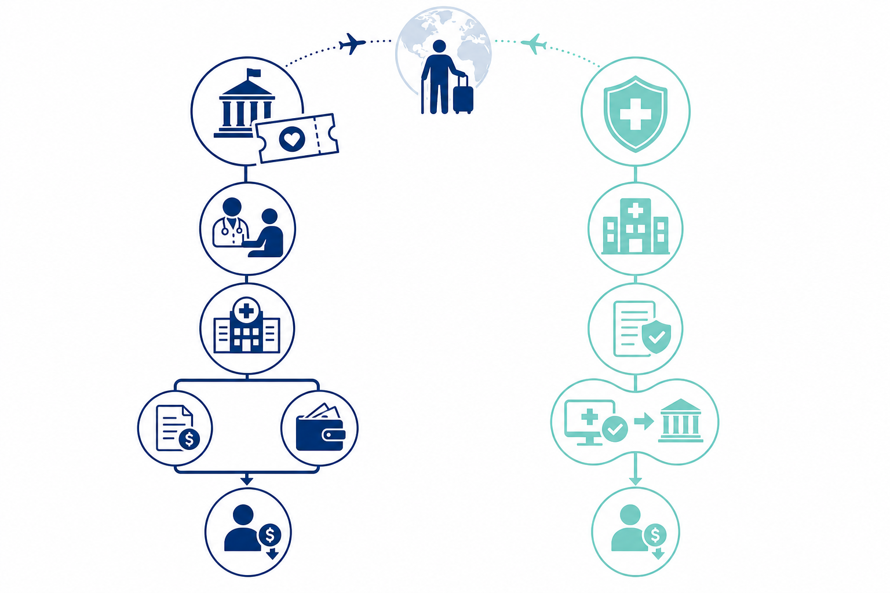
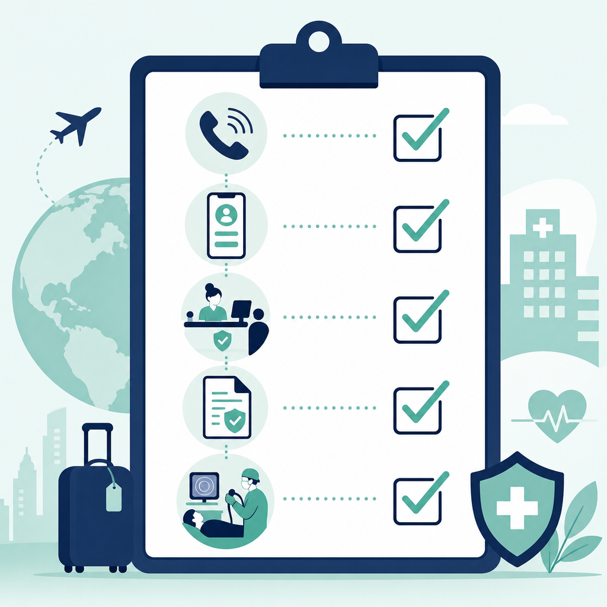

為什麼選深圳新風和睦家？
深圳新風和睦家醫院（下稱「和睦家」）坐落福田區福強路，距福田口岸約 15 分鐘車程，是香港新風天域集團與和睦家醫療合資興建的港資綜合私院。對香港長者而言，它具備三項獨特優勢：
- 醫療券試點機構：2024 年 8 月 14 日起正式啟用，長者可在大灣區使用政府醫療券支付指定門診服務
- 跨境保險直付：與保誠、富衛、友邦、安盛、宏利、匯豐人壽等 35+ 間香港保險公司建立直付網絡，支持日間手術及住院的「免找數」結算
- 定額套餐透明：內窺鏡、影像檢查等項目提供書面定額套餐，價格區間通常低於香港同級私院
在 MedicalPrice 影像模組中，和睦家無痛胃鏡套餐基價約 HK$6,000–9,125，對比香港私院同類套餐（如港怡 HK$10,550 起、養和 HK$9,200 起），跨境選項具明顯價格優勢——若再疊加 VHIS 直付，實際自付額可進一步壓低。
路徑一：長者醫療券 — 門診就診實操流程
合資格人士為年滿 65 歲的香港居民，每年獲發 HK$2,000 醫療券（與本地使用共用同一戶口）。在大灣區使用前，須先完成以下準備：
使用前必備條件
- 已登記加入醫健通（eHR）——2024 年 6 月 28 日起，在香港以外使用醫療券的強制要求
- 持有有效香港身份證或入境處《豁免登記證明書》
- 醫療券戶口仍有可用餘額（可透過醫健通 App 或 182 832 查詢）
四步就診流程
- 預約：致電 (+86) 4008-919191 或 (+852) 5801 1515，或透過官方微信小程序 / WhatsApp 預約指定科室
- 到院登記：就診當日親身前往一樓大堂「香港長者醫療券接待處」，出示香港身份證完成身分認證
- 接受診療：在 9 個指定科室完成門診服務（見下表）
- 結算醫療券：於科室前台申報使用醫療券，醫院即時更新戶口並提供餘額記錄
| 指定科室（9 個） | 適用服務類型 | 醫療券可用 |
|---|---|---|
| 全科、內科、外科 | 基層診症、慢病跟進 | ✓ 門診 |
| 眼科、耳鼻喉科、骨科 | 專科診症及康復 | ✓ 門診 |
| 婦科、口腔科 | 預防性及治療性服務 | ✓ 門診 |
| 健康管理 | 健康檢查、慢病監測 | ✓ 門診（可享獎賞先導計劃） |
| 內窺鏡中心、日間手術 | 胃鏡、腸鏡、日間程序 | ✗ 不可使用醫療券 |
| 住院病房 | 留院治療 | ✗ 不可使用醫療券 |
獎賞先導計劃（額外福利）
在和睦家 9 個指定科室接受預防疾病、跟進/監測慢性疾病的基層門診服務時，若主要到診原因符合計劃指定的基層醫療用途，當次使用的醫療券金額可累積計算，賺取額外獎賞供日後支付同類服務。計劃為期 3 年（2023 年 11 月起），詳情以衞生署最新公布為準。
路徑二：VHIS 跨境免找數 — 如何扣減自付額？
若您持有香港 VHIS 或高端醫療保險，且保單涵蓋深圳和睦家為認可網絡醫院，可透過預先批核 + 直付結算大幅減少現場自付。以下以日間內窺鏡（最常見的跨境就醫場景）為例說明。

五步直付流程
- 確認網絡：致電您的保險公司或查閱保單，確認深圳和睦家在認可醫療網絡內，且計劃涵蓋日間手術/診斷成像
- 預約並申請預先批核：向和睦家預約後，由醫院代向保險公司提交 Pre-authorization（常規案件約 3–4 個工作天）
- 取得批核結果：保險公司向醫院發出付款保證書/擔保函，醫院通知您批核金額及自付部分
- 接受治療：按預約到院完成檢查或手術
- 結算離院：保險公司與醫院直接結算批核範圍內的費用；您只需現場支付自付額（Deductible）及保單差額
自付額精算：以無痛胃鏡為例
假設和睦家無痛胃鏡定額套餐為 HK$7,563，您持有 VHIS 靈活計劃（假設日間手術保障上限充足）：
| 費用項目 | 全額自付 | VHIS 直付後（示例） |
|---|---|---|
| 和睦家無痛胃鏡套餐 | HK$7,563 | — |
| 保險公司承擔（批核範圍內） | — | HK$6,563（假設） |
| 保單自付額（Deductible） | — | HK$1,000 |
| 您實際支付 | HK$7,563 | HK$1,000 |
以上為示意數字，實際自付額取決於您的保單類型（標準/靈活/高端）、年度剩餘限額、是否含 SMM 附加保障，以及套餐外追加項目（如病理活檢、息肉切除）。建議在預約時同時向醫院及保險公司確認書面估價。
與香港私院橫向比價
MedicalPrice 影像模組收錄的參考數據（2026 年）：
- 深圳和睦家 無痛胃鏡：HK$6,000–9,125（含麻醉及醫生費，標註「跨境免找數」）
- 香港港怡 日間胃鏡：HK$10,550–19,430
- 香港養和 日間中心：HK$9,200–10,800（非全包，雜費另計）
- 香港播道 日間胃鏡：HK$5,800（地板價，但需親身到港）
對居住新界北或常北上深圳的長者而言，和睦家在「價格 + 直付便利 + 免過關往返香港」三方面的綜合性價比具吸引力——但需權衡跨境交通、陪同安排及術後即日返港的可行性。
醫療券 + VHIS 可以一起用嗎？
這是最高頻的誤解。簡答：不能在同一筆費用上叠加，但可以在同一次跨境行程中分開使用。
舉例：長者先在和睦家全科門診覆診高血壓（HK$1,000 診金），可使用醫療券支付；同一趟行程中若另外預約了隔天的無痛腸鏡套餐，則該套餐走 VHIS 直付，與醫療券無關。兩筆費用、兩套系統、分開結算。

出發前準備清單
- 已登記醫健通，並確認醫療券戶口餘額（如計劃使用醫療券）
- 已預約和睦家指定科室，記錄確認編號
- 如屬 VHIS 直付項目，已完成預先批核並取得書面批核結果
- 攜帶香港身份證、保險卡（如有）、過關證件
- 已向保險公司確認本次項目在保障範圍及網絡名單內
- 已在 MedicalPrice 影像模組 對比香港同類套餐基價，確認跨境確實更划算
常見問題
Q：醫療券餘額不足怎麼辦？
超出醫療券餘額的部分需自付。您也可以選擇不使用醫療券，全額自付後再自行決定是否向其他保險計劃索償（如高端醫療保險的門診保障，視乎保單條款）。
Q：VHIS 標準計劃能直付嗎？
視乎保險公司是否將深圳和睦家納入您的計劃網絡。部分 VHIS 標準計劃的大灣區保障有限，靈活/高端計劃通常覆蓋更廣。請直接致電保險公司確認，不要假設所有 VHIS 計劃均支持跨境直付。
Q：息肉切除等追加項目誰付？
和睦家定額套餐通常不含超出標準範圍的病理活檢及息肉切除。若術中發現息肉需即時切除，追加費用可能不在套餐及保險批核範圍內，需現場自付。建議預約時主動詢問「若需活檢/切除的追加估價」。
結語
深圳新風和睦家為香港長者提供了「醫療券付門診 + VHIS 直付做檢查」的雙軌選項。掌握兩條路徑的分工，就能精準控制跨境就醫的自付額。出發前完成醫健通登記、保險預批和套餐比價，是避免「到了深圳才發現走錯支付渠道」的關鍵。